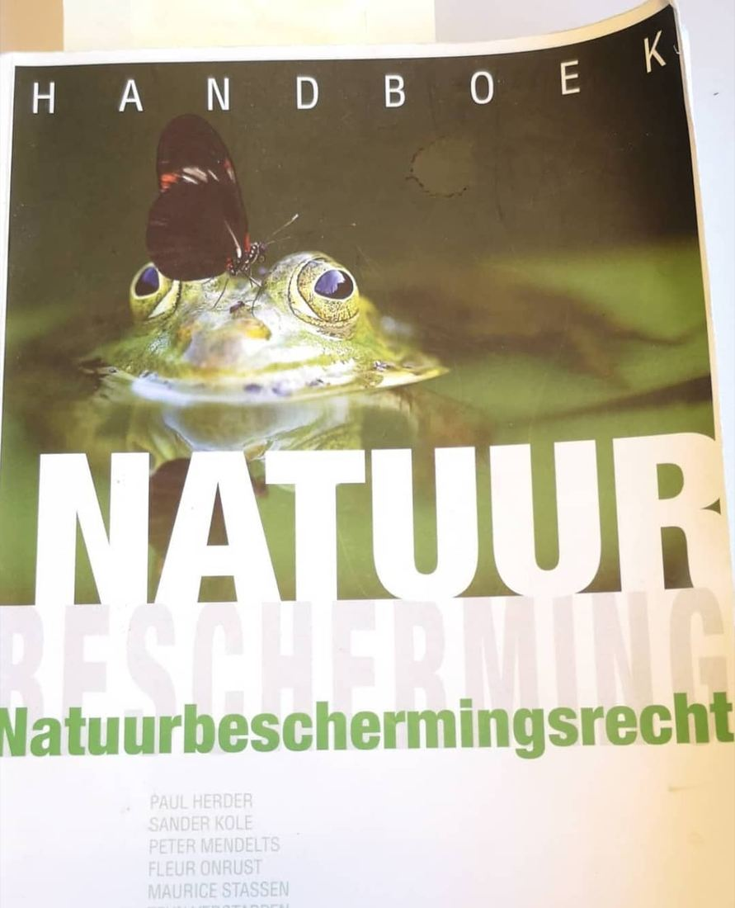

Heliconius in het handboek natuurbeschermingsrecht
21 september 2020 · Handboek natuurbeschermingsrecht
- Op de foto
- Heliconius
- Het ging over
- Inheemse vlinder

Oei! Het Nederlandse handboek van natuurbeschermingsrecht. Met een prachtige maar zeker niet inheemse heliconius - vlindersoort.
Ingestuurd door @michadoliveira